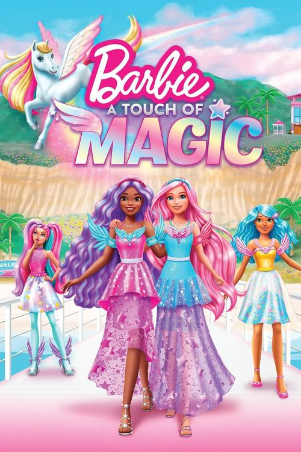

Barbie: Life in the Dreamhouse

Estreno: 20 de enero de 2012
Calificación: 7,5/10
Duración: 75 episodios, 7 temporadas
Género: Animación, aventura, comedia
Sinópsis: Esta serie web animada presenta las aventuras tras bambalinas de Barbie, sus hermanas y sus
fabulosos
amigos"
Barbie:Dreamtopia

Estreno: 5 de noviembre de 2017
Calificación: 5,9/10
Duración: 34 episodios, 1 temporada
Género: Animación, fantasia, aventutra
Sinópsis: Barbie y su hermana pequeña Chelsea viajan a través de los diversos mundos de Dreamtopia. A
través de los ojos de la imaginación de Chelsea, los espectadores exploran mundos deliciosos y
encantadores y conocen a personajes coloridos que viven allí.
Barbie: Somos dos

Estreno: 16 de mayo de 2022
Calificación: 6,8/10
Duración: 26 epidosios, 1 temporada
Género: Animación, aventura, musical
Sinópsis: Barbie "Malibu" Roberts y Barbie "Brooklyn" Roberts persiguen sus sueños de estrellato musical
en la escuela de artes escénicas en Nueva York mientras exploran la Gran Manzana.
Barbie: Vlogger

Estreno: 19 de junio de 2015
Calificación: 5/10
Duración:
Género: Animación,
Sinópsis:
Barbie: Dreamhouse Adventures

Estreno:
Calificación:
Duración:
Género: Animación,
Sinópsis:
Barbie: A touch of magic
Estreno:

Calificación: /10
Duración:
Género:
Sinópsis: